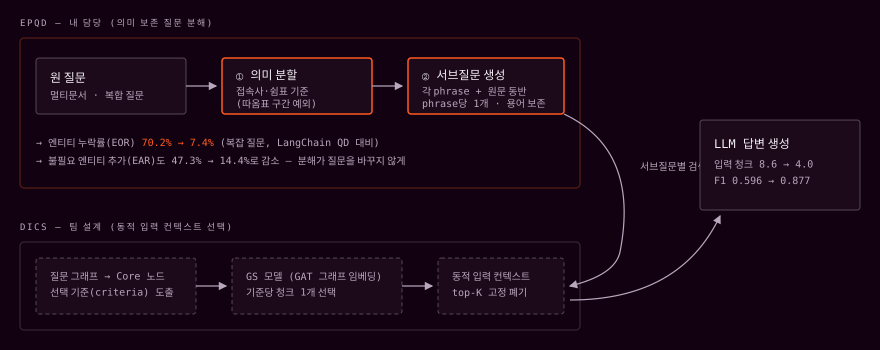

+28%pRetrieval F1 — 0.596 → 0.877
1SCIE 논문 — 공동 주저자
1총장상 — 졸업작품 전시회
S배경 — 분해할수록 잃어버리는 질문
기존 RAG의 Query Decomposition은 분해 과정에서 질문의 핵심 엔티티와 관계 구조를 잃어버립니다. 멀티홉 QA에서는 이 연결 정보가 곧 정답 경로라서, 분해가 오히려 검색을 망가뜨리는 역설이 생깁니다. 게다가 분해 품질을 정량 평가할 데이터셋조차 없었습니다.
T역할 — 3인팀에서 데이터셋과 분해 모듈 담당
담당Custom QA 데이터셋 구축 · EP-QD 모듈 설계/구현
기간2024.02 — 2025.01 (1년)
논문Electronics 14(4):659, 2025 — 공동 주저자
A설계와 구현
01EP-QD: 의미 보존형 질문 분해

- 질문 내 엔티티·관계를 그래프로 표현하고, 연결 중심도와 루트 거리 기준으로 Core 노드를 선정 — Core 중심으로 의미가 보존된 서브쿼리 생성
- 동일 노드가 여러 경로에 등장하면 병합하지 않고 각 서브그래프에 복제 포함해 멀티홉 관계를 유지한 채 검색
- 엔티티·관계 보존을 유도하는 프롬프트 구조와 출력 포맷 설계로 분해 결과가 Retriever에서 바로 쓰이도록 제어
02Custom Multi-document QA 데이터셋
- 분해 품질을 정량 평가할 데이터셋이 없어 HotpotQA를 실험 목적에 맞게 재구성 — 질문 유형 분류 기준 정의, Supporting Facts·Context 구조 정제
- 모델 학습·평가에 바로 쓰이는 전처리 파이프라인 구현
R결과
- 동일 Retriever/LLM 조건에서 LangChain 기반 QD 대비 Retrieval F1 평균 0.596 → 0.877, Ground-truth 문서 Recall 안정적 증가, 불필요한 청크 선택 감소
- SCIE 등재 논문 출판 (공동 주저자), 인공지능융합대학 졸업작품 전시회 총장상
W기술 선정 이유
HotpotQA멀티홉 QA의 표준 벤치마크 — Supporting Facts가 있어 Retrieval 품질을 직접 채점 가능
Custom Graph Logic기성 그래프 라이브러리 대신 직접 구현 — 분해 규칙을 실험 목적대로 완전히 통제
GPT 계열동일 모델 고정으로 분해 방식 간 비교의 재현성 확보
+회고 — 다시 한다면
- 분해에 드는 추가 LLM 호출 비용 대비 성능 이득을 함께 보고했을 것 — 상용 적용 관점의 트레이드오프 분석
- GPT 계열 외 오픈소스 모델에서도 재검증해 프레임워크의 모델 독립성을 입증했을 것